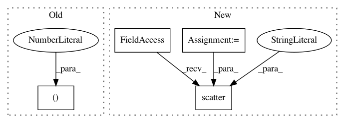

153f6e0ff5729fc22b68d5f6e0fd05edf96d8c2c,examples/datasets/plot_make_imbalance.py,,,#,36
Before Change
axs = [a for ax in axs for a in ax]
axs[0].scatter(X[y == 0, 0], X[y == 0, 1], label="Class /ǖ", alpha=0.5)
axs[0].scatter(X[y == 1, 0], X[y == 1, 1], label="Class /Ǘ", alpha=0.5)
axs[0].set_title("Original set")
plot_decoration(axs[0])
After Change
multipliers = [0.9, 0.75, 0.5, 0.25, 0.1]
for i, multiplier in enumerate(multipliers, start=1):
ax = axs[i]
X_, y_ = make_imbalance(X, y, sampling_strategy=ratio_func,
**{"multiplier": multiplier,
"minority_class": 1})
X_.plot.scatter(
x="feature 1", y="feature 2", c=y_, ax=ax, colormap="viridis",
colorbar=False
)
ax.set_title("Sampling ratio = {}".format(multiplier))
plt.tight_layout()
plt.show()
In pattern: SUPERPATTERN
Frequency: 3
Non-data size: 4
Instances
Project Name: scikit-learn-contrib/imbalanced-learn
Commit Name: 153f6e0ff5729fc22b68d5f6e0fd05edf96d8c2c
Time: 2019-11-17
Author: g.lemaitre58@gmail.com
File Name: examples/datasets/plot_make_imbalance.py
Class Name:
Method Name:
Project Name: lebedov/scikit-cuda
Commit Name: 6e4757e57341c0714ac83cfdf106058df12aa52d
Time: 2019-08-03
Author: udrobots@gmail.com
File Name: demos/pca_demo.py
Class Name:
Method Name:
Project Name: modAL-python/modAL
Commit Name: 274b12034f836f6071c5f2c8853339cddc0b52b3
Time: 2017-12-16
Author: 28926195+cosmic-cortex@users.noreply.github.com
File Name: examples/iris_dataset/query_by_committee.py
Class Name:
Method Name: